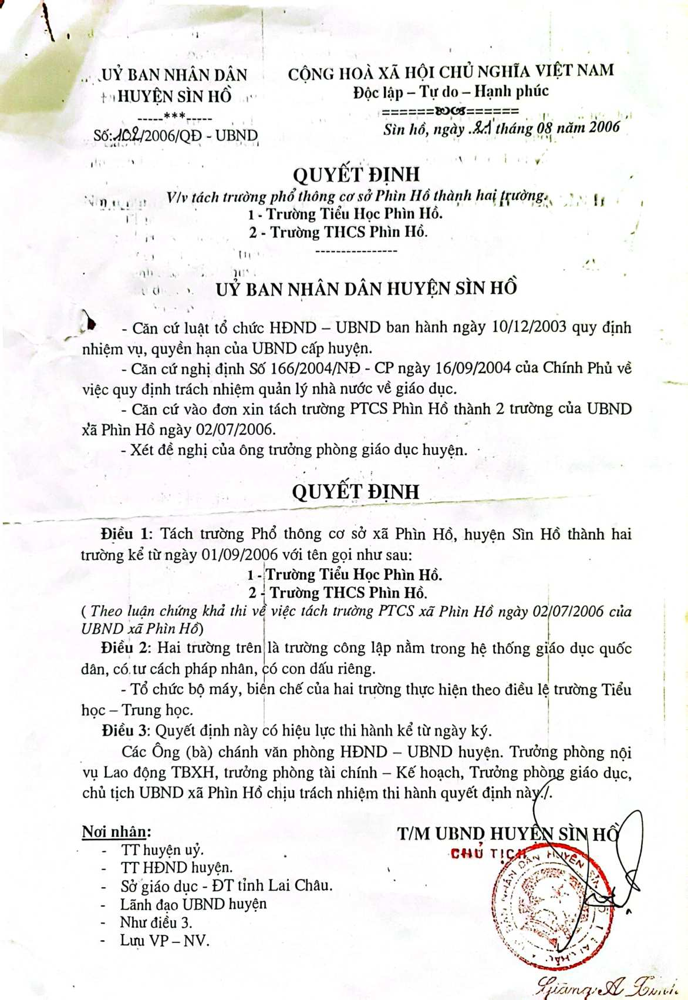

Học tập
Tổ chức dạy học theo chương trình THCS, chú trọng hỗ trợ học sinh còn khó khăn và xây dựng thói quen tự học.

Giới thiệu
Trường PTDTBT THCS Phìn Hồ gắn nhiệm vụ dạy học với rèn luyện nề nếp, kỹ năng sống và chăm lo sinh hoạt bán trú cho học sinh.
Nhà trường là cơ sở giáo dục công lập trên địa bàn xã Phìn Hồ, huyện Sìn Hồ, tỉnh Lai Châu. Với mô hình phổ thông dân tộc bán trú, trường không chỉ tổ chức dạy học theo chương trình THCS mà còn quan tâm đến nền nếp ăn ở, sinh hoạt, tự quản và sự trưởng thành của học sinh.
Cổng thông tin này được xây dựng để công khai thông tin, cập nhật hoạt động giáo dục, hỗ trợ phụ huynh tra cứu tài liệu và liên hệ thuận tiện hơn.
Căn cứ pháp lý
Quyết định thành lập là mốc pháp lý quan trọng trong quá trình hình thành Trường THCS Phìn Hồ.
UBND huyện Sìn Hồ ban hành ngày 21/08/2006 về việc tách Trường PTCS Phìn Hồ thành Trường Tiểu học Phìn Hồ và Trường THCS Phìn Hồ.

Tổ chức dạy học theo chương trình THCS, chú trọng hỗ trợ học sinh còn khó khăn và xây dựng thói quen tự học.
Rèn kỹ năng tự quản, giữ gìn vệ sinh, tham gia hoạt động tập thể và có trách nhiệm với lớp, với trường.
Quan tâm điều kiện sinh hoạt, bữa ăn, chỗ ở và sự phối hợp giữa giáo viên, học sinh, phụ huynh.